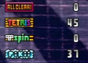

1300
As soon as you transition to level 1300, the last gimmick of the mode starts - Master Pikii (Mikii). And it's going to last for a looong time. All the way up to 2600. Every piece you place from now on, after a certain period of time will become "frozen", and you won't be able to to clear it anymore. Think of it as the HARD BLOCK item from TGM2 - it is basically that, but applied to every piece you place and it stays like that forever.
There's a few important things to note about this mechanic:
- The time it takes for a piece to freeze depends on your medals. The more medals you have, the longer it takes for a piece to freeze. That is called "Freezing Time".
- If you manage to clear a tetris, the most bottom row of the stack will be removed
Medals

Medals are earned by performing various types of line clears during the game: All Clears, Tetrises, T-Spins and Pikii line clears. Medals affect 2 important things: Level Bonus on line clears and Freezing Time of pieces.
Note: Only T-Spin Double and T-Spin Triple counts for a medal
Here's a little table for medals and their effects:
| ACs | Tetrises | T-Spins | Pikii | |
|---|---|---|---|---|
| Freeze Time | +2.5 frames, rounded down | +1 frame | +1 frame | +3 frames |
| Level Bonus | +1 per 6 ACs | +1 per 10 Tetrises | +1 per 16 T-Spins | +1 per 28 Pikii |
In practice, most players try to maximize the amount of Tetris medals to get the highest level bonus possible, while the amount of Pikii medals varies depending on the strategy used. You can learn more about that in the Different Strategies of Defeating Mikii section.